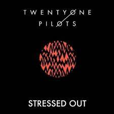
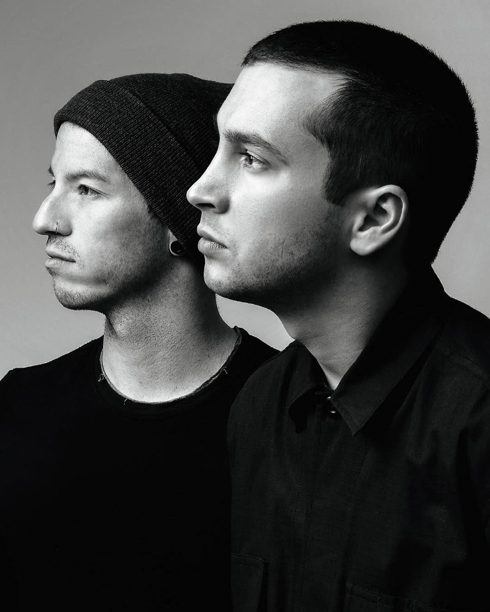

2009-2010: FORMAÇÃO E TWENTY ONE PILOTS
A banda foi formada em Columbus, por Tyler Joseph, Nick Thomas e Chris Salih. Tyler Joseph escolheu o nome da banda de uma peça chamada “Todos Eram Meus Filhos” (Original: All My Sons), escrita por Arthur Miller nos anos 40. A peça é sobre um homem chamado Joe Keller que administra uma empresa que envia peças para aviões usados na Segunda Guerra Mundial. Joe descobre que suas peças estavam danificadas, então se vê diante de uma questão moral: enviar as peças e receber o dinheiro necessário para sustentar a sua família ou não enviá-las e ficar com o nome manchado por não ser confiável, além de ficar em uma situação mais complicada financeiramente. Ele acaba enviando as peças e causando a morte de vinte e um pilotos. Tyler explica que a história foi a inspiração para o nome da banda e serve para lembrá-los que “as decisões que beneficiam o ‘agora’ terão consequências logo adiante; mas a decisão que parece ser difícil acabará por ser mais gratificante.” Em 29 de dezembro de 2009, eles lançaram seu álbum de estreia autointitulado, Twenty One Pilots, e começaram a fazer shows pelo estado de Ohio. Em 2010, a banda lançou dois covers em sua conta no SoundCloud, “Time to Say Goodbye”, de Andrea Bocelli e Sarah Brightman, e “Jar of Hearts”, da cantora Christina Perri.
LOGO DA BANDA
Sua primeira aparição foi na capa do álbum Regional At Best, em 2011. Em uma entrevista, Tyler Joseph falou sobre a criação da logo da banda (texto adaptado):
"Isso não tem a ver com o nome da nossa banda. O que aconteceu foi que meu colega de quarto… O nome dele é Mark [Eshleman], ele cria vários dos nossos vídeos também. Ele estava com um programa de edição aberto e eu disse, “Cara, eu preciso de algo! Eu preciso de algo que grite o que estamos tentando fazer. Crie algo para mim!” e ele desenhou esses retângulos e colocou assim e eu disse “Sim! É isso!”. Foi um momento em que fiquei, “Eu não sei o que isso é, não tem significado algum agora, mas vamos enchê-lo de significado.”Já sobre o significado, Tyler explicou em um entrevista:
"Significa twenty one pilots. Porque isso significa twenty one pilots… vem com uma de nossas músicas chamada “Kitchen Sink”. O conceito inteiro dessa música é que sinto que os humanos estão sempre lutando, o tempo todo, quando se trata de propósito, tentando entender qual o propósito deles, o que é propósito, qual o significado, justificando sua própria existência. Muitas crianças e pessoas da minha idade lutam com a pergunta “qual é o ponto” e a logo… o que realmente significa é que é um encorajamento.  Quando alguém pergunta pra mim o que a logo significa, a logo significa alguma coisa pra mim porque eu fiz significar algo pra mim. Esse é o ponto. O fato é que eu criei algo que apenas eu entendo e eu decido ou não divulgar o significado disso, esse é o princípio de propósito para mim. O significado de propósito para mim é criar alguma coisa, seja escrevendo músicas, pintando um quadro, se expressando através de arte, seja fotografia ou música ou teatro, ou o que for. Não precisa ser artístico, mas se você cria algo e só você sabe significado, esse é o começo de propósito para você. Quando você está no quarto sozinho, tentando decidir se deve ficar vivo, você pode dizer a si mesmo “Eu deveria permanecer vivo porque eu sou o único que sabe o significado dessa coisa”. Então a logo é um incentivo para as pessoas criarem. É o que isso significa."2011-2012: REGIONAL AT BEST E CONTRATO COM A FUELED BY RAMEN
Josh Dun, ex-baterista substituto da House of Heroes, se juntou à banda em maio de 2011. A banda informou a saída do baterista anterior e o ingresso de Josh pelo Facebook.
O segundo álbum independente, Regional at Best, foi lançado em 8 de julho de 2011, já com a participação de Josh. A chegada do álbum foi acompanhada por um show gratuito de lançamento do CD na New Albany High School. Durante o show, Tyler relembrou que ele e Josh consideraram acabar com a banda. Incertos de que conseguiriam fazer shows nos padrões de qualidade que queriam com apenas dois membros. Porém, eles decidiram continuar, usando bastante samples e gravações para melhorar suas performances ao vivo. Nessa época eles não promoviam muito os shows, não postavam no Facebook ou Twitter. O motivo é que eles tinham uma ideia muito específica de como queriam que os shows do twenty one pilots fossem para os fãs. A última coisa que eles queriam era os novos fãs dirigindo por uma hora e meia para uma performance que eles não achavam que ia ser muito boa. Muitas vezes ele tocaram para um público de 15 a 50 pessoas, mas o objetivo era tocar para pessoas que nunca tinham visto eles e conquistá-las.
Foi só em novembro de 2011 que Tyler e Josh finalmente resolveram anunciar um show nas redes sociais e chamar seus amigos. O show aconteceu no Newport Music Hall, mesmo lugar onde eles se conheceram. O resultado foi impressionante: os ingressos esgotaram e eles tiveram que ligar para o local do show para disponibilizar mais 400 ingressos, mesmo ficando no limite por causa dos códigos de segurança dos bombeiros. Os ingressos extras foram vendidos bem rápido, e eles performaram um show que surpreendeu todo mundo. Isso acabou se tornando só o começo de uma sucessão de momentos memoráveis. Dentro de uma semana depois do show, a banda foi inundada por ligações de gravadoras tentando fazê-los voar para Nova York ou Los Angeles para assinar um acordo. Embora muitas tenham brigado pela banda, foi finalmente decidido que iriam assinar com a Fueled By Ramen, da Warner Music Group, que tem como distribuidora a Atlantic Records. O acordo foi anunciado por um vídeo postado pela FBR em 30 de abril de 2012. A banda contou para os fãs sobre o acordo num show esgotado no LC Pavilion.
Ainda em 2011, o duo também deu aos fãs duas faixas gratuitas pela newsletter do e-mail: a versão original de “House of Gold”, do Vessel, e uma demo intitulada “Two”, que não foi lançada oficialmente. Em 11 de fevereiro de 2012, a banda lançou um vídeo no Youtube para a música inédita chamada “Goner”. A música possui uma nova versão disponível no álbum Blurryface, de maio de 2015.
2012-2013: VESSEL E RECONHECIMENTO
Em 17 de julho de 2012, eles lançaram seu primeiro EP com o selo da Fueled By Ramen, contendo três músicas e intitulado “three songs”. Já em agosto, eles embarcaram em uma curta turnê com Neon Trees e Walk the Moon e fizeram sua primeira visita ao Japão e Coreia.
Eles trabalharam com Greg Wells, produtor de artistas como Adele e Katy Perry, em seu primeiro álbum na gravadora Fueled By Ramen, Vessel. O álbum foi lançado em 8 de janeiro de 2013 e chegou à 21ª posição na Billboard 200.
O primeiro hit nos Estados Unidos foi “Holding On To You”, que alcançou a posição 11ª na Billboard Alternative Songs. O clipe oficial da música foi lançado em 12 de novembro de 2012. Em 17 de março de 2013, a banda apresentou um set no mtvU Woodie Award durante o SXSW Conference & Festivals.
A música “Lovely” foi lançada em 27 de abril de 2013 como um single promocional para a viagem da banda pro Japão. A música foi uma regravação da versão do álbum Regional at Best e também foi incluída como faixa bônus na versão do iTunes do Vessel.
Os singles “Guns For Hands” e “Lovely” alcançaram as posições 21ª e 67ª, respectivamente, no Japan Hot 100. Sequencialmente em 2013, clipes para “Guns for Hands” e “Car Radio” foram adicionados em 7 de janeiro e 19 de abril, respectivamente. Em maio de 2013, Fall Out Boy anunciou que twenty one pilots seria a banda de abertura da turnê Save Rock and Roll Arena Tour no outono do mesmo ano.

A banda apareceu pela primeira vez na TV no dia 8 de agosto, performando “House of Gold” no talk show americano Conan. O clipe da música foi lançado em outubro. Na véspera de natal, Tyler Joseph cantou “O come, O come, Emmanuel” no evento Christmas with the Stars da Five14 Church em New Albany, Ohio. O vídeo oficial da performance foi adicionado ao Vimeo em 13 de janeiro de 2014. Em dezembro, um clipe oficial de “Migraine” foi lançado exclusivamente para o Reino Unido. No dia 31, o clipe para a música “Truce” foi adicionado ao Youtube.